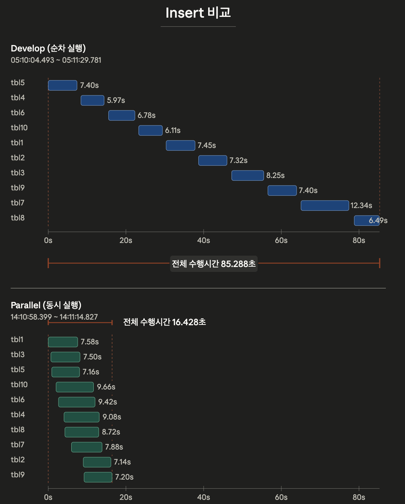
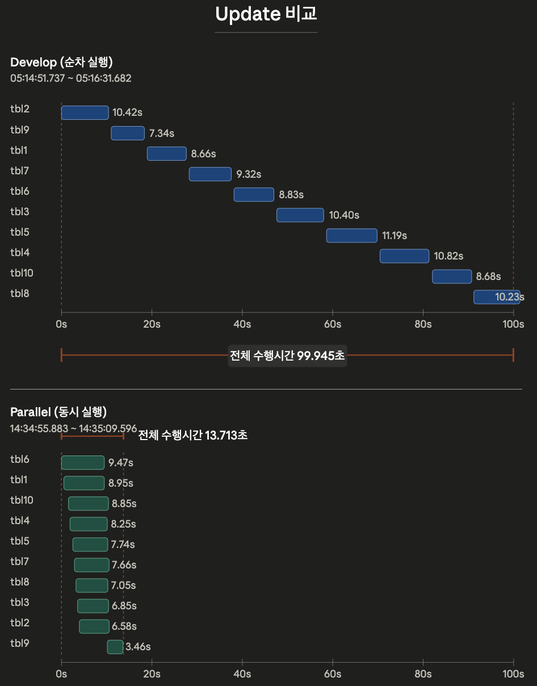

최종 보고서 · 2026-06-04
근거:2.design/poc_design.md(설계),7.final_test/report.md(실험), 첨부 perf 콜체인/플레임그래프(병목 분석)
현재 applylogdb는 복제 로그를 순차적으로 처리한다. 이 방식은 다음 두 요인으로 슬레이브 반영 지연(lag)을 키운다.
본 PoC는 위 두 지연 요인을 applylogdb의 병렬화로 완화하여 복제 성능(특히 반영 지연)을 향상시키는 것을 목적으로 한다.
설계 문서 원안은 Insert 연산만 명시했으나, 본 PoC에서는 Update 연산을 추가하여 Insert/Update 두 워크로드 모두를 측정 대상으로 한다.
병렬화의 기본 전제와 제약:
병렬화를 위해 기존 단일 흐름을 LogReader(Reader) 와 ApplyWorker(Worker) 로 분리한다.
LogReader
LA_ITEM을 생성하고 transaction 단위로 묶는다.global committed_lsa를 갱신하고 _db_ha_apply_info 갱신 및 reclaim을 수행한다.ApplyWorker
ha_worker=[n])에 따라 N개 생성되어 병렬 apply를 수행한다.last_completed_lsa를 LogReader에 보고한다.AS-IS
+----------------------+
| ApplyLog Main |
+----------------------+
| data |
| - LA_ITEM |
| - LA_APPLY |
| - final_lsa |
| - committed_lsa |
| - workspace |
| function |
| - read active/arv log|
| - decode log record |
| - build LA_ITEM |
| - build LA_APPLY |
| - process repl items |
| - flush row items |
| - execute stmt |
| directly |
| - commit |
| - update |
| _db_ha_apply_info |
+----------+-----------+
|
v
Slave DB / Server
TO-BE
+----------------------------+
| LogReader |
+----------------------------+
| data |
| - LA_ITEM |
| - LA_APPLY |
| - final_lsa |
| - committed_lsa |
| function |
| - read active/arv log |
| - build LA_ITEM |
| - build LA_APPLY |
| - detect long trans |
| - enqueue committed tx |
| - collect results |
| - update apply info |
| - reclaim items |
+-------------+--------------+
|
| enqueue committed tx
v
+----------------------+ +----------------------+ +----------------------+
| Worker 0 | | Worker 1 | ... | Worker N |
+----------------------+ +----------------------+ +----------------------+
| data | | data | | data |
| - queue | | - queue | | - queue |
| - session | | - session | | - session |
| - workspace | | - workspace | | - workspace |
| function | | function | | function |
| - process repl items | | - process repl items | | - process repl items |
| - flush row items | | - flush row items | | - flush row items |
| - execute stmt | | - execute stmt | | - execute stmt |
| directly | | directly | | directly |
| - commit | | - commit | | - commit |
| - report completed | | - report completed | | - report completed |
| lsa | | lsa | | lsa |
+----------+-----------+ +----------+-----------+ +----------+-----------+
| | |
+-------------------------+--------------------------------+
|
v
Slave DB / Server
핵심 원칙:
global committed_lsa와 _db_ha_apply_info는 LogReader가 단독 관리한다.LA_ITEM을 만들고 transaction 단위로 LA_APPLY를 구성하며, commit log를 만나면 committed transaction으로 확정해 worker queue에 등록한다.ws_Repl_objs, ws_Repl_error_link는 전역에서 제거하고 worker별로 분리한다. flush threshold·commit interval도 worker별 관리.last_completed_lsa를 LogReader에 보고한다.global committed_lsa를 갱신하고 그 시점에 _db_ha_apply_info를 업데이트하며, 완료 확정 transaction의 item을 정리·reclaim 한다.cubrid_ha.conf의 ha_worker=[n], default 1)로 설정 가능해야 한다.변수 소유권은 Reader-owned / Shared(lock) / Worker-local 3분류로 정리됨(상세:2.design/poc_design.md변수 정리). 핵심은 row decode scratch buffer·workspace·apply 통계·flush 상태를 worker-local로 분리하고, transaction registry(repl_lists,LA_APPLY,committed_lsa)는 lock으로 공유.
cub_server testdb)csql로 부하를 생성하며, 테이블당 10만 건 연산을 하나의 트랜잭션으로 발생시킨 long transaction(테이블당 commit 1회)이다. 10개 테이블이 서로 다른 테이블이므로 트랜잭션 간 종속(dependency)이 없다 → 병렬 적용에 이상적인 조건. Insert / Update 각각 측정.#2 dev_tuned = develop 빌드(순차 적용)#6 poc_buf5g_dwb0 = POC 빌드(병렬 적용)| 항목 | 값 |
|---|---|
double_write_buffer_size |
0 |
data_buffer_size |
5G |
log_buffer_size |
5G |
log_volume_size |
1G |
checkpoint_interval |
30min (csql에서 checkpoint 수행) |
addvoldb |
100G + temp |
지표 정의:Slave/worker = Slave Sum / 10(테이블당 평균 적용 시간),Eff. Parallelism = Slave Sum / Slave Elapsed(동시 활성 워커 수 근사),Lag = 마스터 마지막 commit → 슬레이브 마지막 apply.
Insert
| 지표 | #2 dev_tuned (순차) | #6 poc_buf5g_dwb0 (병렬) | 변화 |
|---|---|---|---|
| Master Elapsed (s) | 154.60 | 162.20 | ≈ 동일 |
| Slave Elapsed (s) | 87.80 | 25.85 | 3.4× 단축 |
| Slave/worker (s) | 8.05 | 16.10 | 2.0× 증가 |
| Eff. Parallelism | 0.92 | 6.23 | 순차 → 병렬 |
| Lag M→S (s) | 83.05 | 14.25 | 5.8× 단축 |

Update
| 지표 | #2 dev_tuned (순차) | #6 poc_buf5g_dwb0 (병렬) | 변화 |
|---|---|---|---|
| Master Elapsed (s) | 192.27 | 179.21 | ≈ 동일 |
| Slave Elapsed (s) | 111.84 | 32.59 | 3.4× 단축 |
| Slave/worker (s) | 10.85 | 16.32 | 1.5× 증가 |
| Eff. Parallelism | 0.97 | 5.01 | 순차 → 병렬 |
| Lag M→S (s) | 92.28 | 23.71 | 3.9× 단축 |

관찰
Eff. Parallelism ≈ 1(순차 — 한 번에 한 테이블), POC는 약 5–6 워커가 동시 활성. 슬레이브 전체 반영 시간(Slave Elapsed)은 Insert·Update 모두 약 3.4배 단축, 복제 lag은 약 4–6배 단축.data_buffer_size=5G + addvoldb temp 조합이 워커당 처리 속도·lag 모두 가장 우수했다(상세: 7.final_test/report.md).병렬성은 확보됐으나, 단일 테이블(워커당) 복제 시간은 오히려 증가
위 표에서 보이듯 전체 반영 시간은 크게 단축됐지만, 테이블 1개를 적용하는 시간(Slave/worker)은 순차 대비 늘었다:
즉 "여러 테이블을 동시에 처리해 전체는 빨라졌지만, 각 워커가 자기 테이블 하나를 처리하는 속도 자체는 느려진" trade-off가 나타난다.
원인 분석 — 네트워크가 아니라 실제 apply 로직이 병목
슬레이브 cub_server의 on-CPU perf를 측정한 결과, 수행 비중은 네트워크 전송이 아니라 실질적인 Insert/Update 로직에 집중되어 있었다. (복제 적용 경로 slocator_repl_force→xlocator_repl_force→locator_insert_force/locator_update_force가 on-CPU의 큰 분모를 차지) 측정한 콜체인/플레임그래프는 본 보고서에 함께 첨부한다.
slave_cub_server_insert_callchain.html (또는 slave_cub_server_insert_flame_full.svg)slave_cub_server_update_callchain.html (또는 slave_cub_server_update_flame_full.svg)콜체인 기준 병목 예상 지점(상세는 위 첨부 파일):
locator_insert_force → heap_insert_logical 86%) — 세 갈래:heap_stats_find_best_page(33.8%) → heap_vpid_alloc(23.1%) → file_alloc(18.2%)lock_object(20.9%) → lock_internal_perform_lock_object → lock-free hashmap(lf_hash_insert_internal 등 약 12%)log_append_undoredo_crumbs(27.8%) → prior_lsa_alloc_and_copy_crumbs/prior_lsa_next_record_internal(약 14–15%)cub_alloc→__libc_malloc→_int_malloc→sysmalloc)이 로그 레코드 복사에 반복 매달림.locator_update_force → heap_update_logical 71.6%) — 로그 경로가 지배적:heap_log_update_physical(47.3%) → log_append_undoredo_recdes/crumbs(45%) → prior_lsa_alloc_and_copy_crumbs(39.1%), 그리고 update 고유의 log_diff(23.3%)locator_lock_and_get_object_with_evaluation(23.0%) + lock_escalate_if_needed(8.5%) / lock_remove_all_inst_locks(8.3%)spage_update(15.1%) → spage_update_record_after_compact(13.0%) → spage_compact(8.5%)prior_lsa_*(로그 레코드 생성) + malloc 체인이 insert·update 양쪽 모두 두껍다.병렬화 시 워커당 둔화의 추정 메커니즘
위 병목 지점들은 대부분 워커 간 공유 자원에 닿아 있다 — prior_lsa_next_record_internal의 prior LSA append(mutex), lock 매니저의 lock-free hashmap, page buffer/file_alloc(공간 할당), 그리고 malloc(_int_malloc/sysmalloc). 워커 수가 늘면 이 공유 경로들에서 경합(mutex 대기, 캐시·메모리 경합, 공간 할당 경합) 이 증가하여, 전체 처리량은 늘어도 개별 워커의 단일 테이블 처리 시간은 늘어나는 것으로 추정된다.
후속 과제(설계 문서 TODO와 연결): 파일 동시 접근 시 I/O 병목, 캐시·버퍼 페이지 참조 시 lock 필요성 검토 → 위 공유 자원(prior LSA append, lock hashmap, page/space 할당, allocator) 경합 완화가 워커당 성능 회복의 핵심 지점이다.